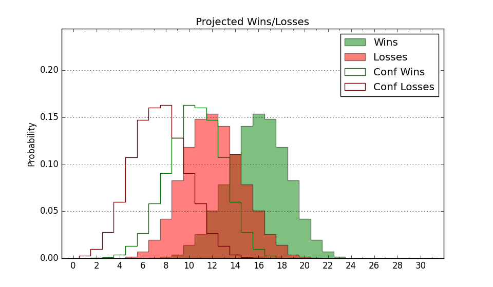

| Home | Game Probabilities | Conferences | Preseason Predictions | Odds Charts | NCAA Tournament |
| City: | Troy, Alabama | |
| Conference: | Sun Belt (1st)
| |
| Record: | 0-0 (Conf) 4-4 (Overall) | |
| Ratings: | Comp.: 2.2 (139th) Net: 7.2 (98th) Off: 106.2 (90th) Def: 99.0 (139th) SoR: 5.3 (128th) |
| Remaining | ||||||
|---|---|---|---|---|---|---|
| Date | Opponent | Win Prob | Pred. | |||
| 12/17 | @ Southeastern Louisiana (287) | 65.0% | W 77-73 | |||
| 12/21 | Mercer (190) | 74.2% | W 73-66 | |||
| 12/29 | @ Southern Miss (87) | 22.9% | L 63-72 | |||
| 12/31 | @ Texas St. (214) | 49.1% | L 66-67 | |||
| 1/5 | Old Dominion (173) | 70.7% | W 68-62 | |||
| 1/7 | Arkansas St. (291) | 86.5% | W 70-58 | |||
| 1/12 | @ Georgia St. (269) | 62.3% | W 66-63 | |||
| 1/14 | @ Appalachian St. (223) | 51.0% | W 66-65 | |||
| 1/19 | James Madison (67) | 41.0% | L 70-73 | |||
| 1/21 | Louisiana Monroe (344) | 93.4% | W 78-60 | |||
| 1/26 | @ Louisiana Lafayette (146) | 36.5% | L 70-74 | |||
| 1/28 | @ South Alabama (138) | 35.1% | L 66-70 | |||
| 2/2 | Southern Miss (87) | 50.4% | W 68-67 | |||
| 2/4 | Texas St. (214) | 76.6% | W 70-63 | |||
| 2/9 | South Alabama (138) | 64.8% | W 70-66 | |||
| 2/11 | Louisiana Lafayette (146) | 66.2% | W 74-69 | |||
| 2/16 | @ Arkansas St. (291) | 65.3% | W 66-62 | |||
| 2/18 | @ Marshall (85) | 22.3% | L 68-77 | |||
| 2/22 | @ Louisiana Monroe (344) | 80.5% | W 74-64 | |||
| 2/24 | Coastal Carolina (270) | 84.9% | W 74-62 | |||
| Previous | Game Score | |||||
| Date | Opponent | Win Prob | Result | Off | Def | Net |
| 11/14 | @Florida St. (152) | 37.5% | W 79-72 | 7.8 | 1.2 | 8.9 |
| 11/17 | (N) Merrimack (346) | 89.3% | W 73-54 | 4.8 | -3.6 | 1.2 |
| 11/18 | (N) St. Thomas MN (204) | 62.7% | L 76-78 | 1.2 | -8.5 | -7.3 |
| 11/19 | @Montana (176) | 42.7% | W 73-62 | 5.5 | 13.4 | 18.9 |
| 11/28 | @Arkansas (21) | 7.5% | L 61-74 | -0.2 | -0.5 | -0.7 |
| 12/3 | @SIU Edwardsville (167) | 40.6% | L 72-78 | 7.0 | -18.7 | -11.7 |
| 12/5 | @San Diego St. (28) | 8.9% | L 55-60 | -4.8 | 14.1 | 9.3 |
| 12/10 | Tennessee Tech (286) | 86.2% | W 87-64 | 9.5 | 4.0 | 13.6 |
| Stats & Trends | |||||
|---|---|---|---|---|---|
| Current | Day | Week | Month | Season | |
| Composite | 2.2 | +0.0 | +2.6 | +8.1 | +8.7 |
| Comp Rank | 139 | -- | +25 | +90 | +104 |
| Net Efficiency | 7.2 | +0.0 | +3.0 | -11.5 | -- |
| Net Rank | 98 | +1 | +32 | -49 | -- |
| Off Efficiency | 106.2 | +0.1 | +1.0 | -6.2 | -- |
| Off Rank | 90 | +1 | +24 | -31 | -- |
| Def Efficiency | 99.0 | -0.1 | +1.9 | -5.3 | -- |
| Def Rank | 139 | -1 | +32 | -32 | -- |
| SoS Rank | 80 | +2 | -28 | -43 | -- |
| Exp. Wins | 15.9 | +0.0 | +1.0 | +1.8 | +3.4 |
| Exp. Conf Wins | 10.5 | +0.0 | +0.7 | +2.0 | +2.1 |
| Conf Champ Prob | 6.3 | -0.2 | +2.7 | +1.4 | +1.2 |

| Advanced Stats | ||
|---|---|---|
| Stat | Value | Rank |
| Off Eff FG % | 0.515 | 133 |
| Off Ast Ratio | 0.148 | 129 |
| Off ORB% | 0.293 | 113 |
| Off TO Rate | 0.147 | 82 |
| Off FT Ratio | 0.283 | 244 |
| Def Eff FG % | 0.507 | 198 |
| Def Ast Ratio | 0.124 | 68 |
| Def ORB% | 0.279 | 215 |
| Def TO Rate | 0.195 | 42 |
| Def FT Ratio | 0.392 | 305 |